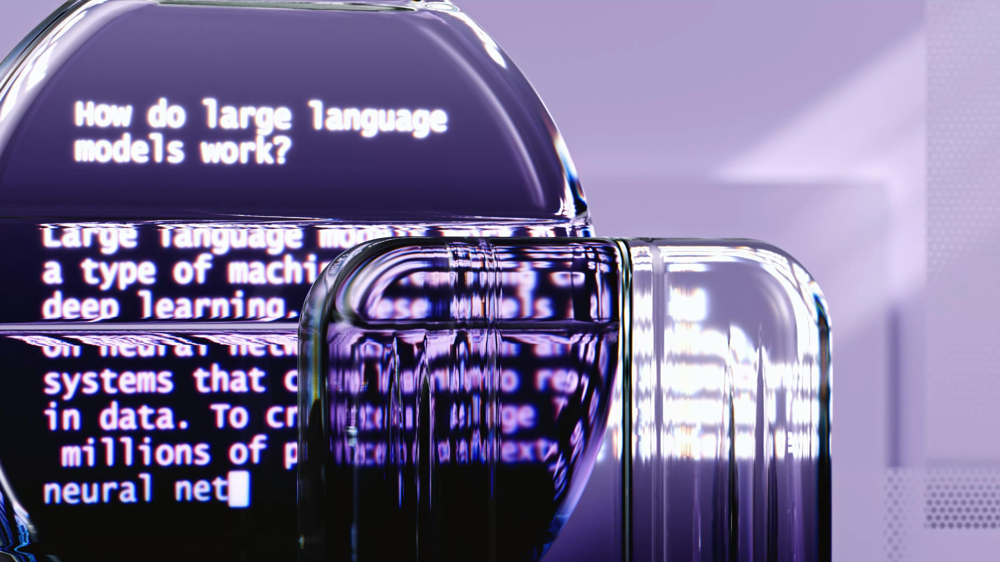

All About Large Language Models (LLMs)
Hello, this is a comprehensive document about Large Language Models (LLMs). LLMs are a type of machine learning model that are trained on vast amounts of text data to understand and generate human-like language. These models are capable of performing a variety of language-related tasks, including translation, summarization, question answering, and even creative writing.

Applications of Large Language Models
- Natural Language Processing (NLP): LLMs are used for tasks like text classification, sentiment analysis, and named entity recognition, helping to automate the understanding of human language.
- Content Creation: LLMs are widely used for generating articles, stories, blog posts, and even academic papers, enabling automated content generation in many industries.
- Customer Support: LLMs power chatbots and virtual assistants, providing human-like interactions for customer service, troubleshooting, and support across various sectors.
- Translation: LLMs can translate text between different languages with high accuracy, breaking down language barriers in communication and business.
- Personal Assistants: Virtual assistants like Siri, Alexa, and Google Assistant are powered by LLMs, helping users with tasks such as setting reminders, answering questions, and controlling smart devices.
Types of Large Language Models
- GPT (Generative Pre-trained Transformer): GPT models, such as GPT-3 and GPT-4, are among the most well-known LLMs, designed for a wide range of text generation and understanding tasks.
- BERT (Bidirectional Encoder Representations from Transformers): BERT is designed for understanding the context of words in a sentence and is mainly used for tasks like question answering and language inference.
- T5 (Text-to-Text Transfer Transformer): T5 is a model that treats every NLP task as a text-to-text problem, enabling it to be applied to a wide range of language tasks, such as summarization and translation.
Future of Large Language Models
The future of LLMs is extremely promising. As these models continue to grow in size and complexity, they are expected to become even more capable of understanding and generating natural language. LLMs could revolutionize industries like education, healthcare, and entertainment. However, challenges such as ensuring fairness, reducing bias, and maintaining ethical use will need to be addressed as the technology continues to evolve.